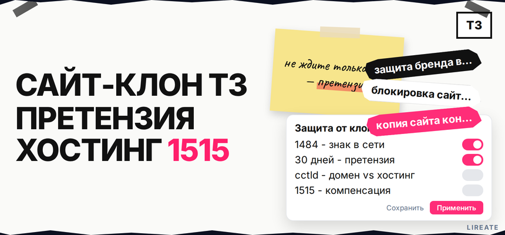
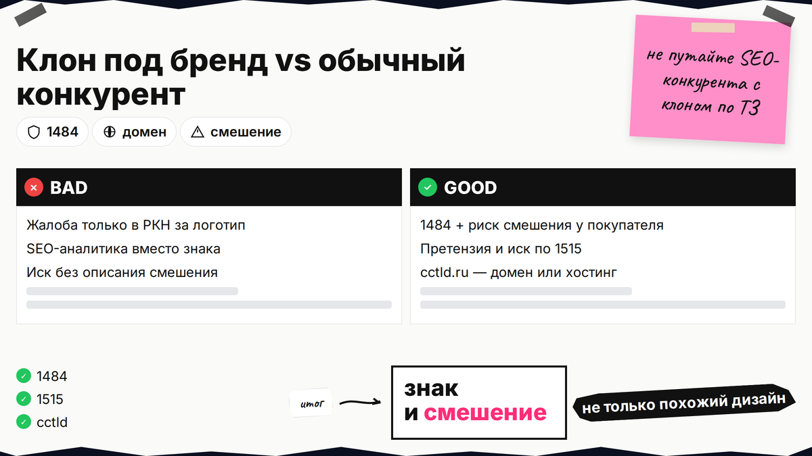
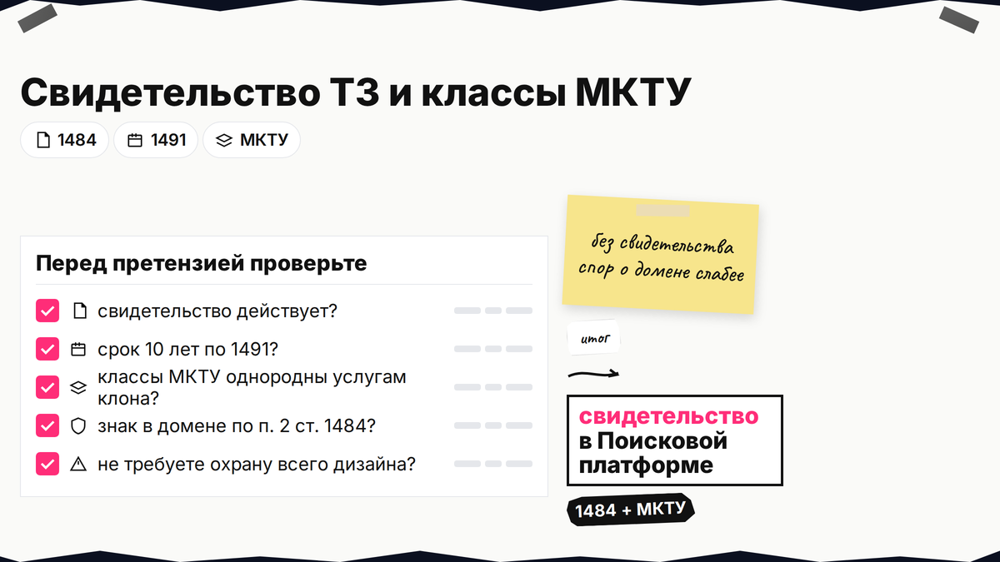
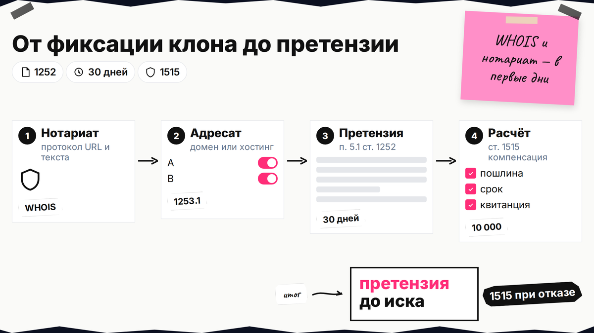

Вы нашли сайт с вашим логотипом, похожим дизайном и названием в домене - и первым делом ищете, как срочно "закрыть" его через Роскомнадзор. Защита бренда в интернете при сайте-клоне идет другим маршрутом: зарегистрированный товарный знак, фиксация смешения, претензия администратору домена или хостингу и при необходимости арбитраж по ГК РФ. Ниже вы отличите клон от обычного конкурента, соберете доказательства, выберете адресата и поймете, когда реестр РКН не поможет.

TL;DR / Быстрый инсайт: Сайт-клон по ТЗ - сходное обозначение в домене или на страницах при риске смешения (ст. 1484). Проверьте свидетельство и МКТУ, зафиксируйте URL нотариально, выберите адресата: домен → администратор; контент → хостинг (cctld.ru). Претензия, затем иск и компенсация по ст. 1515. РКН не закрывает сайт только из-за чужого знака без отдельного основания реестра.
Товарный знак - зарегистрированное обозначение (слово, логотип, комбинация), которое отличает ваши товары и услуги от чужих. МКТУ - международная классификация: в свидетельстве указаны номера классов, за которыми закреплен знак. Материал на 31.10.2026 не заменяет консультацию патентного поверенного или юриста.

Запрос "копия сайта конкурента" уводит в SEO-аналитику; правообладателю нужны знак и смешение у покупателя.
| Ситуация | Признаки | Типичный инструмент |
|---|---|---|
| Клон под ваш бренд | Ваш логотип или сходное имя в домене, те же услуги, тот же визуальный код | Претензия, иск по ст. 1484, 1515; спор о домене по инструкции .RU |
| Обычный конкурент | Свой бренд, другая айдентика, сходная ниша без вашего знака | Маркетинг и качество сервиса, не претензия по ТЗ |
| Копия дизайна без знака | Похожая верстка, но другое название и домен | Чаще авторское право на элементы, не автоматически ТЗ; знак нужен отдельно |
| Чужой бренд только в рекламе | Баннер или контекст с вашим именем, а не целый сайт-двойник | Другой сценарий - см. материал «упоминание чужого бренда в рекламе» |
Обзор ВС № 4 (2025), п. 22: само размещение знака в URL не всегда нарушение - смотрят цель, контекст и смешение у потребителя (разбор e.law.ru). Делайте: описать, что именно совпадает (домен, шапка, карточки, тексты оффера). Не делайте: подавать жалобу в РКН как единственный шаг только из-за логотипа на главной.

Без действующего свидетельства спор о бренде в домене слабее. Исключительное право на ТЗ включает использование в сети и в доменных именах (п. 2 ст. 1484). Делайте: сверить свидетельство, срок (10 лет, ст. 1491) и классы МКТУ в Поисковой платформе; при споре о домене см. гайд «доменное имя и НМА». Не делайте: требовать запрет всего дизайна, если охраняется только словесный знак.

Делайте: нотариальный протокол осмотра с URL и текстом, плюс WHOIS, IP и хостинг в первые дни. Не делайте: один скрин без даты как единственное доказательство для иска.
Координационный центр .RU разделяет сценарии: нарушение на страницах - претензия к хостинг-провайдеру; нарушение в доменном имени - к администратору домена (cctld.ru). По Пленуму ВС № 10, п. 158-159, ответчиком по доменному спору выступает администратор, а не регистратор.
| Тип нарушения | Кому писать первым | Дополнительно |
|---|---|---|
| Знак в домене | Администратор домена | Заявление регистратору .RU на досудебные ограничения на действия с доменом |
| Знак на сайте, домен нейтральный | Хостинг-провайдер как информационный посредник | Иск к администратору/владельцу контента; посредник - по ст. 1253.1 |
Делайте: приложить номер свидетельства и сравнение. Не делайте: требовать у регистратора отключить домен без процедуры cctld.ru.
При споре между юрлицами или ИП о компенсации и убытках претензия обязательна; на ответ дают 30 календарных дней (п. 5.1 ст. 1252). При иске только о пресечении использования знака претензия не всегда обязательна, но письмо часто ускоряет удаление.
Укажите свидетельство, URL, требования и расчет по ст. 1515 (от 10 000 до 5 000 000 руб. или двукратная стоимость - сверьте редакцию). Делайте: отправку с подтверждением. Не делайте: подменять компенсацию "штрафами РКН".
Подайте иск о запрете знака в домене и на сайте и о компенсации; приложите протоколы и переписку (практика СИП по сходным доменам - дело А76-15292/2025). Не делайте: обещать блокировку "за три дня".
Миф и факт: "Роскомнадзор обязан закрыть любой сайт-клон" - миф для случая, когда на сайте только чужой товарный знак без иного запрещенного содержания. Суды отказывают во включении таких страниц в реестр только за факт знака (практика вроде "Ланта-Банк", intelight.pro). Факт: блокировка через реестр возможна, если суд признал конкретную информацию на сайте запрещенной к распространению (например, контрафакт), а не из-за спора о знаке сам по себе.
Делайте: строить стратегию на претензии, иске и исполнении решения. Не делайте: путать жалобу на VPN или "списки РКН" из шумной выдачи с защитой ТЗ.
Маршрут: сравнение с вашим сайтом → проверка свидетельства ТЗ → нотариат и WHOIS → выбор адресата (домен / хостинг) → претензия 30 дней → иск → контроль удаления и мониторинг новых доменов
Зарегистрируйте опечатки и транслит в доменах, мониторьте выдачу по бренду. Если знак использовали в контекстной рекламе, см. гайд по рекламе с чужим брендом. Делайте: запрет копирования айдентики в договорах с подрядчиками. Не делайте: считать один выигранный спор финалом - клоны переезжают на новые домены.
Сохраните шаблон претензии и таблицу "тип нарушения - адресат" в регламенте компании. Еще материалы по бренду и товарным знакам - в рубрике "Бренд" на Лирейт. При сложном доменном споре или зарубежном .com подключайте поверенного до массовых уведомлений; Лирейт помогает с защитой товарного знака и репутации в сети без обещаний исхода конкретного дела.
Материал проверен: редакция Лирейт, практика споров о товарных знаках в доменах и на сайтах.
Достоверность данных: ст. 1483, 1484, 1252, 1253.1, 1515 ГК РФ, инструкции cctld.ru, обзор ВС № 4 (2025) и материалы e.law.ru сверены с КонсультантПлюс на 31.10.2026. Показы Яндекс Вордстат в среде подготовки материала не запрашивались (см. research-notes).
Клон по ТЗ - сходное обозначение и риск смешения источника. Похожая ниша без вашего знака - обычная конкуренция.
Для спора лучше нотариальный протокол осмотра; скриншоты - дополнение, их часто оспаривают по дате.
По домену - администратор имени; хостинг - адресат претензии посреднику при нарушении на страницах.
Не автоматически: один знак без запрещенного содержания не попадает в реестр; нужен иск и иные основания блокировки.
Обязательна для компенсации между юрлицами и ИП (30 дней); при пресечении использования - не всегда, но письмо ускоряет удаление.
Фиксированная сумма в диапазоне закона, двукратная стоимость контрафакта или иной способ из статьи с обоснованием в иске.
Дизайн без знака чаще идет по авторскому праву на отдельные элементы; для домена и названия в шапке нужен ТЗ или иное основание.